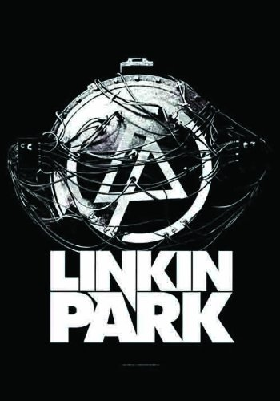

23 июня 2011 года на концерте Linkin Park состоялся флешмоб, который прошёл в Москве на Красной площади. Затем французы повторили московский флэшмоб у себя на родине 1 июля.
Занявшая второе место на Евровидении 2010 популярная турецкая рэпкор/альтернативная-метал-группа MaNga у себя на родине имеет шуточное прозвище «Турецкий Линкин Парк».
30 апреля 2010 года выпустили игру для iPhone «8-Bit Rebellion!». В качестве поощрения за прохождение игры игроку предоставляется возможность прослушать эксклюзивный трек «Blackbirds». А 24 сентября на iPhone вышла игра «Linkin Park Revenge» в стиле Guitar Hero.
Во время выступления Linkin Park на фестивале Rock im Park 3 июня 2012 года перед исполнением «Sabotage» (кавер-версия песни Beastie Boys) участник LPU прямо на сцене сделал предложение своей девушке. Она сказала: «Да».
Джазовый музыкант Эрик Льюис[en] заявил, что благодаря музыке Linkin Park он, поначалу разочаровавшись в джазовом мире, снова начал творить. По совету знакомых послушав песню «Somewhere I Belong», он услышал голос Честера Беннингтона, который напомнил ему звук саксофона Джона Колтрейна, а гармония — музыку Майлса Дейвиса, и вдохновившись этим, Льюис снова начал работать, создал проект Rockjazz.
Видео «One Step Closer» было снято в подземной шахте. Кроме того, деньги на выпуск этого сингла были собраны четырьмя тысячами фанатов.
19 января 2010 благотворительной организацией Music for Relief, которую создала Linkin Park, была организована акция, чья цель — собрать средства для помощи пострадавшим от землетрясений на Гаити.